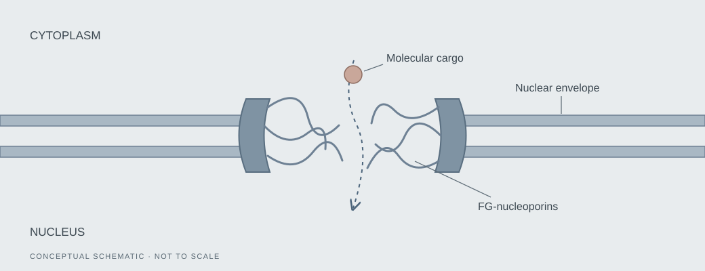

How are FG-nucleoporins organized within individual pores?
I’m interested in spatial variation among nuclear pores and in distinguishing biological differences from changes introduced by fixation, labeling, or imaging.
Research overview
How does a cell control what enters and leaves its nucleus?
Nuclear pore complexes regulate molecular exchange between the nucleus and cytoplasm. My interests center on FG-nucleoporins—the flexible proteins within these pores—and how their nanoscale organization and dynamics relate to selective transport.

Questions
I’m interested in spatial variation among nuclear pores and in distinguishing biological differences from changes introduced by fixation, labeling, or imaging.
I hope to connect structural measurements in fixed cells with observations of FG-nucleoporin behavior in living cells under matched biological conditions.
A longer-term interest is to investigate how variation in FG-nucleoporin organization and dynamics relates to molecular passage through the pore.
Developing my research
As I begin my doctoral training, my immediate interest is in validating sample preparation for reliable structural imaging. I hope to compare a defined set of fixation conditions, fluorescence quality, and the reproducibility of spatial measurements across biological replicates.
I’m interested in three-dimensional photoactivated localization microscopy (3D PALM), and potentially MINFLUX, for nanoscale localization. The choice of method would depend on the biological question, labeling strategy, available instrumentation, and training.
Building on a reproducible structural baseline, I hope to learn live-cell single-molecule approaches, including SPEED microscopy, to study molecular dynamics under matched conditions.
Fixed-cell images describe spatial organization; they do not directly reveal motion. Likewise, an association between structure and transport would motivate further experiments rather than establish a mechanism on its own.
My lab
I’m a member of the Yang Lab at Temple University. The lab’s work on nucleocytoplasmic transport and its development of SPEED microscopy provide the context for my developing interests in quantitative imaging and nuclear pore biology.
Yang Lab (opens in a new tab)